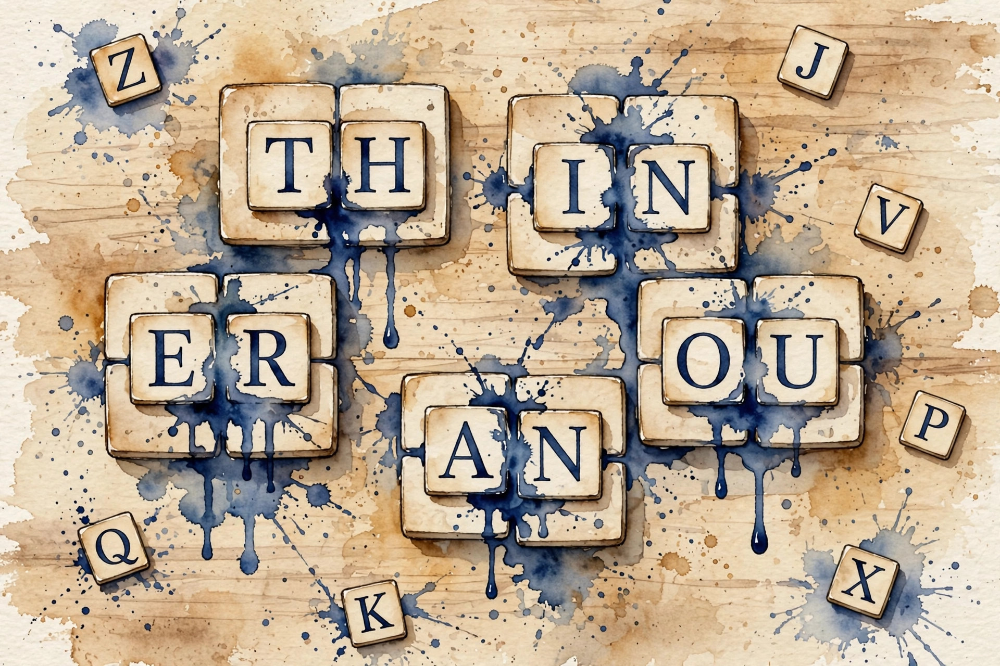

CS224N · Companion artifact U12 of 15
The first thing the model sees: tokens. Tokenization decides the price, the speed, and who the model serves well.
“From the lesson” marks facts from lessons/u12_tokenization_multilingual.md. “Illustration” marks interactive toys that run the lesson’s rules over tiny inputs. “Companion” marks advice from the companion author. Tags after each section name the lesson leaf, for example C04.

Section 1 · C01
From the lessonC01 §2, §3
The model reads text. What does it actually read? "A" is 1 byte in UTF-8, "é" is 2, "€" is 3. The byte stream is the real input. Characters are an interpretation. Unicode assigns every character a number, UTF-8 encodes the number in 1-4 bytes. Scripts differ in byte cost: Latin is cheap, most others cost more.
From the lessonC01 §4, §5
Hand-set toy, labeled as such: "€" (U+20AC) encodes as E2 82 AC, 3 bytes. "A" is 41, 1 byte. A 1000-character Amharic string is about 3000 bytes before any tokenization. UTF-8 is a prefix code: the leading byte says how many follow.
From the lessonC01 §11
The broken assumption is that equal strings are equal. "é" has two encodings (one code point, or e + combining accent), and naive string match treats them as different. Normalize first or the index misses.
The tokenizer sees bytes or characters, never "words". Normalize before you match, or equal strings differ.
Illustration The byte counter. Type text and see its UTF-8 byte cost per character.
text
Section 2 · C02
From the lessonC02 §2, §3
The vocabulary is fixed at 50k. How do you cover every word? BPE is a compression scheme turned tokenizer: count adjacent pairs, merge the most frequent, repeat. Common words become one token, rare words shatter into pieces. After k merges the vocabulary has base size + k entries.
From the lessonC02 §4, §5
From compute_u12.py: on "aaabdaaabac", 6 merges fuse 11 characters into 2 pieces ("aaabdaaaba c"). Merge counts: a+a (4), aa+a (2), aaa+b (2), then three merges of count 1. The last merge fused almost nothing: the tail of BPE is noise.
From the lessonC02 §11
The broken assumption is that merges always help. The count-1 merges at the tail fuse noise and bloat the vocabulary. Stop merges where the counts die.
compute_u12.py (executed 2026-10-06): 4, 2, 2, then 1, 1, 1. The tail is noise.BPE follows frequency, not meaning. Stop the merges where the counts die, or the tail bloats the vocabulary.
Illustration The merge machine. Runs greedy BPE on your string and lists every merge with its count. Prefilled with the lesson toy.
string
merges
Section 3 · C03
From the lessonC03 §2, §3
50k slots, 100 languages. Who gets the tokens? The vocabulary is parliament seats. Big languages win the vote, small languages get fragments. Sharing means one model, but the seats are apportioned by data, not by need. BPE merges follow corpus frequency, so slots go to frequent strings.
From the lessonC03 §4, §5
Hand-set toy, labeled as such: 100 languages, 50k slots, Zipf over languages. Top language: about 15k slots. Bottom 50 share about 500. Fertility follows the slots (C07's numbers). Temperature sampling of the corpus reweights the vote.
From the lessonC03 §11
The broken assumption is that sharing helps small languages. The small language's words shatter into bytes and the model never learns them. Sharing the table is not sharing the capacity.
Section 4 · C04
From the lessonC04 §2, §3
The word is rare. What does the model see? The vocabulary is a city, rare words live outside it. The tokenizer walks them in piece by piece. The model sees fragments, not the word. Coverage at cutoff c = sum of top-c frequencies over the total.
From the lessonC04 §4, §5
From compute_u12.py: Zipf over 10000 words, top 1000 cover 0.765 of tokens, top 10000 cover 1.000. The tail 9000 share 0.235 and shatter into pieces. Half the types are rare, and rare types split.
From the lessonC04 §11
The broken assumption is that the model handles rare words fine. A rare name split into 6 pieces: the model confuses it with a common name sharing pieces. Fragments are not the word.
compute_u12.py (executed 2026-10-06): top 1000 cover 0.765, top 10000 cover 1.000. The 100-word point (0.530) follows the same Zipf rule.Rare words shatter into pieces, and pieces confuse. The long tail is where names and codes live.
Illustration The coverage curve. The Zipf (s = 1) sum is C04’s. The cutoff is yours. At 1000 it reproduces 0.765.
top c words
Section 5 · C05
From the lessonC05 §2, §3
The model never saw Amharic QA. Can it answer? The model learns the task in one language and the languages share a room (C06). The task knowledge walks across the room. How far it walks depends on the room. Transfer works partially, through the shared representation.
From the lessonC05 §4, §5
Hand-set toy, labeled as such: train on English QA, test on Amharic: 0.68 vs 0.81 on English. The gap 0.13 is the price of never seeing the target. The mechanism is shared parameters: the QA head trained on English reads Amharic representations.
From the lessonC05 §11
The broken assumption is that transfer is uniform. Close languages transfer, distant ones do not. The gap varies by pair: measure per pair.
The gap measures the alignment. Price it per language pair, never assume it.
Section 6 · C06
From the lessonC06 §2, §3
Where is "French" in the model? Nowhere and everywhere: there is no French module, but French sentences cluster together in the hidden states, near English ones. One building, many tenants. Languages share the halls (parameters) and keep their rooms (clusters).
From the lessonC06 §4, §5
Hand-set toy, labeled as such: add a language, per-language accuracy falls 0.02 (interference) while zero-shot transfer rises 0.05 (sharing). The trade has a sign per side. Sharing helps (transfer) and hurts (interference): the curse of multilinguality. Capacity is finite.
From the lessonC06 §11
The broken assumption is that more languages always help. Past some count, interference dominates and every language degrades.
Every shared capacity has a curse: sharing helps through transfer and hurts through interference. Capacity is finite.
Section 7 · C07
From the lessonC07 §2, §3
The same sentence in two languages, same price? The tokenizer is a tax code, and the rates differ by script. Fertility is the rate: tokens per word. The tax falls hardest on the already underserved.
From the lessonC07 §4, §5
From compute_u12.py: parallel toy sentences take 24 (English), 30 (German), 41 (Turkish), 58 (Amharic) tokens. Ratios x1.00, x1.25, x1.71, x2.42. Fertility: 1.3, 1.6, 2.1, 2.8. Per-token pricing charges 2.42x for the same meaning. The mechanism is C02's: the BPE merges followed the English-heavy training corpus.
From the lessonC07 §11
The broken assumption is that the price is fair because the model is the same. The 2.42x bill says otherwise. Same model, different price.
compute_u12.py (executed 2026-10-06): 1.3, 1.6, 2.1, 2.8 tokens per word.compute_u12.py (executed 2026-10-06): 24, 30, 41, 58 tokens.Per-token pricing charges speakers by script. The 2.42x bill is a fairness problem, not a technical footnote.
Illustration The tax calculator. The ratio rule is C07’s. The token counts are yours. Prefilled with the lesson numbers.
English tokens
other tokens
Section 8 · C08
From the lessonC08 §2, §3
The language has 1M tokens of text, English has 1T. What can the model learn? Data is the soil. Low-resource languages grow in thin soil. Transfer is fertilizer: it helps, it does not replace soil.
From the lessonC08 §4, §5
Hand-set toy, labeled as such: 1M tokens alone: 0.52. With transfer: 0.68. The 0.16 is the fertilizer, the remaining gap to 0.81 is the soil.
From the lessonC08 §11
The broken assumption is that any data helps. Dirty web text teaches the model to speak like spam. Clean beats big.
Transfer is fertilizer, not soil. It helps, it does not replace real data, and dirty data hurts.
Section 9 · C09
From the lessonC09 §2, §3
The benchmark is English translated. Is the Amharic score real? Parity means the same ruler for every language. Translated tests are a bent ruler: they measure translationese, not the language. Native items or admit the bend.
From the lessonC09 §4, §5
Hand-set toy, labeled as such: native Amharic items: 0.61, translated items: 0.68. The 0.07 is translationese: the test is easier than the language. Translationese is simpler, more explicit, less idiomatic. Report both, lead with native.
From the lessonC09 §11
The broken assumption is that translated tests are fine. The 0.07 gap says otherwise.
A translated benchmark is a bent ruler. Native items, or admit the bend and report both.
Section 10 · C10
From the lessonC10 §2, §3
The word is "unhappiness". Where should it split? Gold: un + happy + ness. BPE guess: un + happ + iness. Agreement 1/3. Morphology is the word's anatomy, BPE is the butcher's cut. Sometimes they agree, often they do not.
From the lessonC10 §4, §5
From compute_u12.py: agreement 1/3. The "happ + iness" cut splits the root: the model never sees "happy" whole. BPE cuts by frequency, not by meaning. Agreement = matching boundaries over total.
From the lessonC10 §11
The broken assumption is that BPE approximates morphology. 1/3 says otherwise. Frequency is not meaning.
BPE cuts by frequency, not by meaning. For agglutinative languages the butcher's cut fails worst.
Illustration The agreement checker. Gold boundaries vs BPE boundaries as comma-separated cut positions in "unhappiness".
gold cuts
BPE cuts
Section 11 · C11
From the lessonC11 §2, §3
The sentence is English with Spanish words. What does the tokenizer do? Code switching is the reality of multilingual speakers. The tokenizer was trained on pure text, the switch is out of distribution. Expect worse segmentation at the boundary.
From the lessonC11 §4, §5
From compute_u12.py: "I was headed to la tienda yesterday" gets tags en en en en es es en. Two switches, one Spanish run. The Spanish run segments as rare pieces (C04) and the model loses the thread.
From the lessonC11 §11
The broken assumption is that the model handles switches. Test the switches: benchmarks are monolingual, reality is not.
Section 12 · C12
From the lessonC12 §2, §3
What did we assume that might be false? Every unit is a scaffold of assumptions. The honest close names them. A finding that needs all four bets is weaker than one that needs one.
From the lessonC12 §4, §5
Hand-set toy, labeled as such: the bets are Zipf holds, parallel sentences are parallel, native items exist, tags are known. If Zipf fails, the coverage numbers shift. If the parallel toy is not parallel, the 2.42 ratio is wrong. The numbers carry their bets.
From the lessonC12 §11
The broken assumption is that the audit is complete. The assumption you forgot is the counterexample. Audits are iterative.
Name the bets behind every number. A number without its assumptions is a myth in waiting.
Illustration The bet lister. Type the bets behind a number, one per line, and get the audit back.
Wisdom index
Each nugget states the idea in plain words, why it matters, and the transferable principle. Every one is anchored to its lesson section.